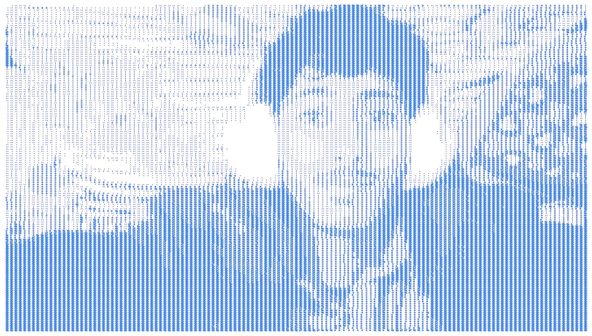

Curious about how software works beneath the surface.
Building backend systems, one layer at a time.
/ whoami

$ whoami > Balaj Mubeen > student — DAE in ICT, CTTI Islamabad > focus — Python, backend engineering, cybersecurity > next — AI systems: fine-tuning, RAG, personalization
Currently a student, learning in public. Most of what's here is a work in progress by design — the roadmap above is real, and so is the pace: fundamentals first, one layer at a time, no shortcuts through the parts that are supposed to be hard.
/ Interest
Started the same place a lot of us do — Linux, networking fundamentals, the cybersecurity rabbit hole. Somewhere in there, the part that actually stuck wasn't breaking systems, it was understanding how they're built: how components talk to each other, where the boundaries should sit, what breaks first under load.
That's the pivot in progress now — from a cybersecurity-first identity toward backend, systems, and infrastructure engineering. The security foundation isn't gone, it's just doing what a foundation should: staying underneath, holding everything else up.
/ Credentials
// Click a credential to preview the certificate.
/ Work
Crypto Toolkit ↗
A unified developer toolkit inspired by CyberChef and OpenSSL — encoding, hashing, encryption, key generation, and file-integrity utilities behind one shared processing engine, exposed through both a CLI and a local web interface.
Password Analyzer ↗
A tool for evaluating password strength and exposing common weaknesses — built as a focused, standalone piece of the broader security toolkit.
Blip Link ↗
A desktop AI companion app built around Rocky, an on-screen animated character with click-to-chat and a global hotkey. Currently the vehicle for learning the JavaScript ecosystem — Electron, React, and everything around them.